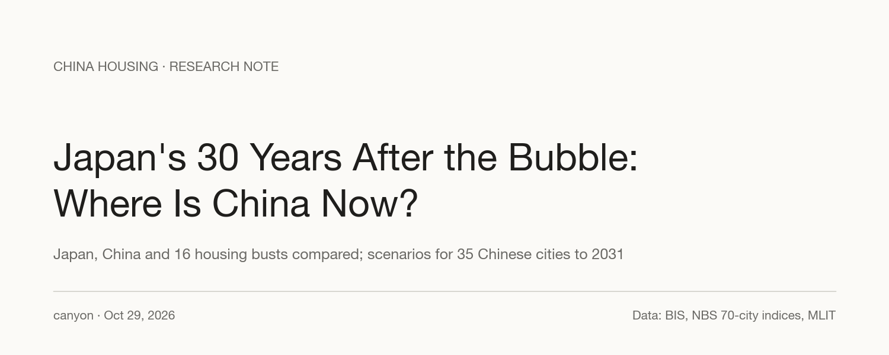
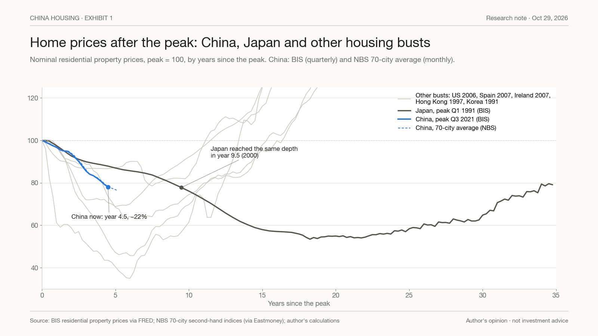
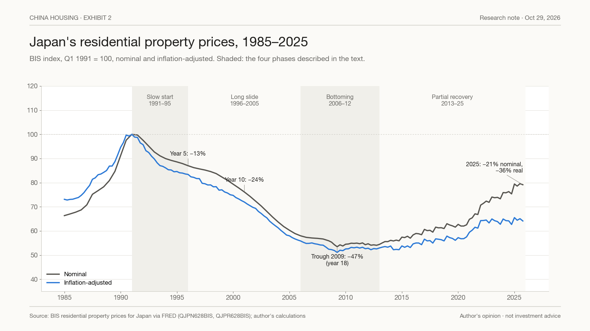
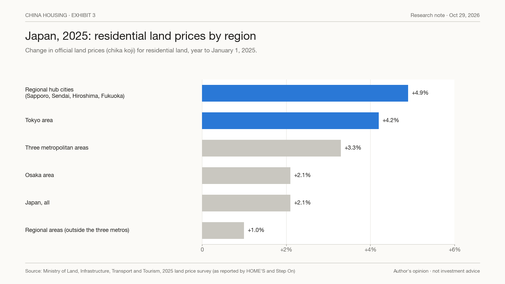
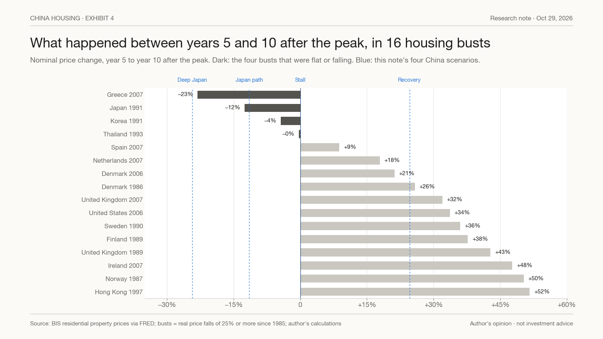
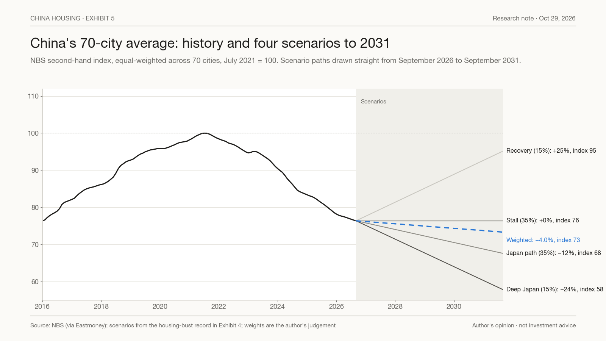
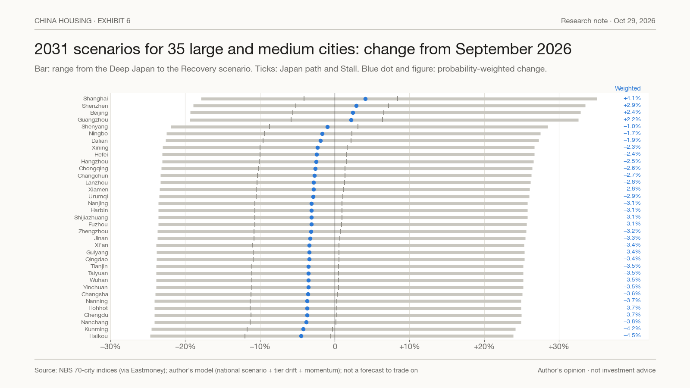

Japan's 30 Years After the Bubble: Where Is China Now?
Three days ago we showed that 2021 broke China's housing market: before it, a city whose prices had fallen for a year usually saw them rise over the next; since then, almost never. This note asks the next question. Japan is the case everyone reaches for. How far into Japan's 30 years is China, and what does the record of housing busts say about the next five?

Contents · 8 sections
Earlier note: What Happened in 2021 (also on X).
Summary#
- By depth, China is in Japan's year 9. By the calendar, it is in year 5. China's national index is 21.9% below its 2021 peak after four and a half years. Japan's took nine and a half years, until 2000, to fall that far.
- Japan's 30 years ran in four phases. A slow start (−13% by year 5), a long slide (−24% by year 10, −42% by year 15), a bottom in 2009 at −46.5% (year 18), then a partial recovery. At the end of 2025, Japanese prices were still 21% below the 1991 peak in nominal terms and 36% below in real terms.
- Japan's recovery was K-shaped. In the 2025 land price survey, residential land rose 4.2% in the Tokyo area and 4.9% in the four regional hub cities, against 1.0% for the regional areas as a whole.
- Of 16 housing busts since 1985, 12 recovered between years 5 and 10, by 9% to 52% in nominal terms. Four did not: Greece, Japan, Korea and Thailand.
- Our four national scenarios for 2026–31 come from that record: Deep Japan −24% (15% weight), Japan path −12% (35%), Stall 0% (35%), Recovery +25% (15%). Probability-weighted: −4%.
- By city, the K continues. Weighted five-year changes are +2% to +4% for the four first-tier cities, about −3% for second-tier and about −6% for third-tier cities. That would leave first-tier cities about 15% below their peaks in 2031, second-tier cities 27% and third-tier cities 31%.
- The scenario matters more than the city. The gap between the national scenarios (49 points) is about five times the gap between the best and worst large city (9 points).
By depth, China is in Japan's year 9#
Exhibit 1 lines up home prices by years since the peak, for China, Japan and five other busts. China's series are the BIS index (quarterly, latest Q1 2026) and the equal-weighted average of the 70 cities in the official NBS survey (monthly, latest September 2026).

China's BIS index is 21.9% below its Q3 2021 peak after four and a half years; the 70-city average is 23.6% below its July 2021 peak. Japan's national index was only 13% below its 1991 peak after five years. It reached China's current depth in mid-2000, nine and a half years in. Most other busts fell faster than either and bottomed sooner: the US was 31% down in nominal terms by year 5 and Hong Kong 65% down by year 6.
There are two ways to read this. China may be compressing Japan's decade into five years, which would put it further through the adjustment than the calendar suggests. Or China may be on a steeper path with further to go. The calendar comparison (Japan in 1995) and the depth comparison (Japan in 2000) bracket the range, and they are the basis for two of our four scenarios.
Japan's 30 years, in four phases#
Exhibit 2 shows Japan's residential property prices from 1985 to 2025, in nominal and inflation-adjusted terms.

- Slow start, 1991–95. Prices fell 13% in five years. The Bank of Japan cut its policy rate from 6% in 1990 to 0.5% by 1995, which slowed the fall but did not stop it.
- Long slide, 1996–2005. Prices were 24% down by year 10 and 42% down by year 15. Banks kept rolling over loans to weak borrowers instead of forcing sales (Caballero, Hoshi and Kashyap, 2008), so there was no single flush of distressed selling.
- Bottoming, 2006–12. The national index hit its low in Q2 2009, 46.5% below the peak and 18 years after it.
- Partial recovery, 2013–25. By Q4 2025 prices were 20.9% below the 1991 peak in nominal terms and 35.9% below after inflation.
The national average hides a K. Exhibit 3 shows the 2025 official land price survey for residential land.

Prices rose 4.2% in the Tokyo area and 4.9% in Sapporo, Sendai, Hiroshima and Fukuoka, against 1.0% for the regional areas as a whole, a figure that includes those four cities. In Tokyo's 23 wards the average new condominium sold for ¥114.83 million in 2023, up 39% and above ¥100 million for the first time; a quality-adjusted index from the NLI Research Institute reached a record 210.2 (2005 = 100). Thirty years on, Japan's capital and its regional hubs recovered; much of the rest did not.
What happened elsewhere between years 5 and 10#
We identified 16 housing busts since 1985 in which real prices fell 25% or more from a five-year high. Exhibit 4 shows how nominal prices moved between year 5 and year 10 after each peak.

Twelve rose, by 9% to 52% (median +35%). Most of them bottomed in years 5 to 7. Four were flat or kept falling: Greece (−23%), Japan (−12%), Korea (−4%) and Thailand (0%).
These four are the ones that matter most for China, and they did not fail for the same reason. Japan had deflation and banks that held bad loans for a decade. Korea had built far more homes than it needed under a government programme to build two million homes between 1988 and 1992. Thailand had a property glut from its early-1990s boom, then the 1997 crisis. Greece had a sovereign debt crisis and a six-year depression inside the euro. What they share is that the excess did not clear quickly and no new group of buyers arrived. In most of the twelve that recovered, prices fell hard and fast, forced sales and bank rescues cleared the overhang, and buyers came back at lower prices.
China has some features of both groups. Like Japan, its owners are not forced to sell, its banks extend rather than foreclose, and consumer prices have been roughly flat. Unlike Japan in the 1990s, its population is already shrinking: it peaked in 2021, the same year as house prices, and fell by 3.39 million in 2025. Japan's population kept growing until 2008, 17 years after its price peak. Births in China fell from 17.86 million in 2016 to 7.92 million in 2025. On the other side, China's national index has already fallen as much as Japan's did in nine and a half years, and its first-tier cities show the turnover and inventory signs that preceded recoveries elsewhere.
Four scenarios for 2026–31#
We take the four national scenarios from the record in Exhibit 4:
- Deep Japan, −24.3%. Japan's next five years after it reached China's current depth (mid-2000 to mid-2005). Greece's years 5 to 10 were similar (−23%).
- Japan path, −11.5%. Japan's years 4.5 to 9.5, the calendar match.
- Stall, 0%. Korea (−4%) and Thailand (0%) in years 5 to 10.
- Recovery, +24.6%. The lower quartile of the twelve busts that recovered. We use the lower quartile rather than the median (+35%) because China lacks both the inflation and the forced clearing that drove most of those recoveries.
The weights are our judgement: 15%, 35%, 35% and 15%. Since 2021, a falling city has kept falling 99% of the time; only 9 of the 70 cities posted a monthly rise in September; and the population is shrinking. Those facts weigh against a classic recovery. The speed of China's fall so far, and the recovery signs in first-tier cities, weigh against the deepest Japanese path. Exhibit 5 shows the 70-city average and the four paths.

The probability-weighted national change is −4.0% over five years, taking the 70-city index from 76 to 73 (July 2021 = 100). The weighted figure is an average of very different outcomes, not the most likely single path; readers who weight the scenarios differently can recombine them.
City by city: the K continues#
China's own data already show a K. Since January 2016, the median first-tier city is up 28%, the median second-tier city 2% and the median third-tier city down 8%; 24 of the 35 third-tier cities are below their 2016 level. The exceptions follow people rather than city rank: Wuxi, a third-tier city next to Shanghai and Suzhou, is up 37%.
To turn the national scenarios into city ranges, we add two adjustments to each scenario. The first is each tier's drift since 2021 relative to the 70-city average: +2.2 points a year for first-tier cities, +0.3 for second-tier and −0.6 for third-tier. We carry half of it forward, the share that worked best when we tested the method on the last five years. The second is each city's current momentum: its year-on-year change relative to the average, scaled down because only about a third of a city's lead or lag persists from one year to the next. Exhibit 6 shows the results for the 35 large and medium cities.

- First tier (median of four): Deep Japan −19%, Japan path −5%, Stall +7%, Recovery +33%; weighted +2.6%. Shanghai is highest at +4.1%, then Shenzhen +2.9%, Beijing +2.4% and Guangzhou +2.2%.
- Second tier (median of 31): Deep Japan −24%, Japan path −11%, Stall +1%, Recovery +26%; weighted −3.2%, with a range of −4.5% to −1.0% across cities.
- Third tier (median of 35): Deep Japan −26%, Japan path −13%, Stall −2%, Recovery +22%; weighted −5.9%.
- Against the peak, the weighted path leaves first-tier cities about 15% below their peaks in 2031, second-tier cities about 27% below and third-tier cities about 31% below. In the Deep Japan scenario those figures become 33%, 43% and 46%: the 40–50% that is often quoted for China would then be true for most cities outside the first tier.
As an example in money terms: Fang.com's reference price for second-hand homes in Shanghai was ¥51,627 per square metre in September 2026. Applying Shanghai's scenario changes gives about ¥42,400 (Deep Japan), ¥49,500 (Japan path), ¥56,000 (Stall) or ¥69,700 (Recovery) in 2031, and ¥53,700 weighted. Listing-based reference prices and the official index move differently, so treat these as the index applied to a price level, not as a quote.
The city spread is the least reliable part of the model. Tested from September 2021, the same method ranked cities' relative performance over the next five years with a correlation of about 0.3, and it expected first-tier cities to beat the average by about 3 points when the outcome was about 11. The K has widened faster than our method assumes, so if anything the spread above is too narrow. The ordering, with first-tier cities on top in every scenario, is the more robust result.
Where China is now#
- On the calendar, Japan in 1995–96: the end of the slow start.
- By depth, Japan in 2000: the middle of the long slide.
- By demographics, worse than Japan at any point in its first two decades, because China's population is already falling.
- By the shape of the market, already K-shaped. Japan's K showed up clearly only in the recovery; China's is visible five years in.
The honest answer to "how much further" is a range. The record of housing busts says most recover between years 5 and 10. The features China shares with the four that did not are why we put most of the weight on a stall or a Japanese path, and why, in every scenario, first-tier cities do better than the rest.
Data and method#
House prices are the BIS residential property price indices for each country (via FRED), quarterly, nominal and real, and the NBS 70-city second-hand price indices for China (month-on-month, chained), January 2011 to September 2026. A bust is a fall in real prices of 25% or more within ten years from a high that was the highest of the previous five years, for peaks from 1985; years 5 and 10 are measured from the peak quarter. Japan's land price figures are from the 2025 official land price survey published by the Ministry of Land, Infrastructure, Transport and Tourism; Tokyo condominium prices are from the Real Estate Economic Institute and the NLI Research Institute. The city model adds to each national scenario half of each tier's annual drift relative to the 70-city average since July 2021, times five, plus each city's current year-on-year lead or lag times 0.54 (the sum over five years of a yearly persistence of 0.35, estimated across the 70 cities). Scenario weights are subjective. Official Chinese indices move more smoothly than agents' data, and 16 busts are a small sample.
This note reflects the author's opinions as of October 29, 2026. It is not investment advice or a recommendation to buy or sell any security or property. Scenarios are not forecasts, and historical patterns may not repeat.
Sources
- BIS residential property prices (selected series), via FRED: https://fred.stlouisfed.org/ (QJPN628BIS, QJPR628BIS, QCNN628BIS, QCNR628BIS and the series for each country in Exhibit 4)
- National Bureau of Statistics, 70-city residential price indices, via Eastmoney data centre: https://data.eastmoney.com/cjsj/newhouse.html
- Earlier note, "What Happened in 2021": https://x.com/stevenkwok20290/status/2114636679495442702 and https://stevenkwo.github.io/canyon/posts/what-happened-in-2021.html
- Japan 2025 land price survey, as reported by LIFULL HOME'S: https://toushi.homes.co.jp/column/?p=17677 and Step On: https://www.stepon.co.jp/uri/tochi/chika_news/2025/0509_3512/
- Tokyo 23-ward condominium prices, NLI Research Institute: https://www.nli-research.co.jp/files/topics/78271_ext_18_0.pdf?site=nli
- China population and births, National Bureau of Statistics (January 19, 2026): https://www.stats.gov.cn/sj/zxfbhjd/202601/t20260119_1962338.html
- Shanghai reference price, Fang.com (September 2026).
- Caballero, R., Hoshi, T. and Kashyap, A. (2008), "Zombie Lending and Depressed Restructuring in Japan", American Economic Review 98(5).
- Reinhart, C. and Rogoff, K. (2009), "The Aftermath of Financial Crises", American Economic Review 99(2).
What would prove this wrong
- OpenThe 70-city average rises year on year by September 2027, which would move weight from the Japan scenarios to Stall and Recovery.
- OpenThe 70-city average falls another 10% by September 2028, which would put China on the Deep Japan path.
- OpenAt least 35 of the 70 cities post monthly gains for six consecutive months, which would end the post-2021 regime.
- OpenThird-tier cities beat first-tier cities over a full year, which would break the K and the city ranking.
- OpenShanghai falls below its January 2026 low, which would mean the first-tier turn has failed.
Disclosure
Notes on this site express the author's opinions. They are based on public information believed to be reliable but not independently audited. Nothing here is investment advice or an offer to buy or sell any security.
中文摘要
- 按跌幅算，中国在日本的第 9 年；按时间算，在第 5 年。中国全国房价指数（BIS）4.5 年跌了 21.9%，日本跌到同样深度用了 9.5 年（到 2000 年）。
- 日本 30 年分四段：慢跌（5 年 −13%）、长跌（10 年 −24%、15 年 −42%）、2009 年见底（−46.5%，第 18 年）、部分回升。2025 年末名义价格仍比 1991 年高点低 21%，扣通胀低 36%。回升是 K 型：2025 年东京圈住宅地 +4.2%、四个地方中心城市 +4.9%，地方圈整体只有 +1.0%。
- 1985 年以来 16 次房价泡沫破裂，12 次在第 5–10 年回升（名义 +9% 到 +52%）；希腊、日本、韩国、泰国 4 次没有。它们的共同点是过剩没有很快出清、也没有新的买家进来。
- 2026–2031 年全国四个情景：深度日本 −24%（权重 15%）、日本路径 −12%（35%）、停滞 0%（35%）、复苏 +25%（15%）；加权 −4%。权重是作者判断。
- 分城市 K 型继续：加权五年变化，一线 +2% 到 +4%（上海 +4.1%），二线约 −3%，三线约 −6%。到 2031 年距各自高点：一线约 −15%、二线约 −27%、三线约 −31%；深度日本情景下分别是 −33%、−43%、−46%。
- 上海按房天下 2026 年 9 月参考价 51,627 元/㎡ 换算，2031 年约 42,400（深度日本）/ 49,500（日本路径）/ 56,000（停滞）/ 69,700（复苏），加权约 53,700。
- 情景之间的差距（49 个点）是城市之间差距（9 个点）的五倍：走哪条路比选哪个城市更重要，但无论哪个情景，一线都排在前面。
- 披露：发表时作者不持有中国地产开发商或地产相关证券。以上不构成投资建议，情景不是预测。
Comments
Comments run on GitHub Discussions through giscus; posting needs a GitHub account. Off-topic or abusive comments are removed.